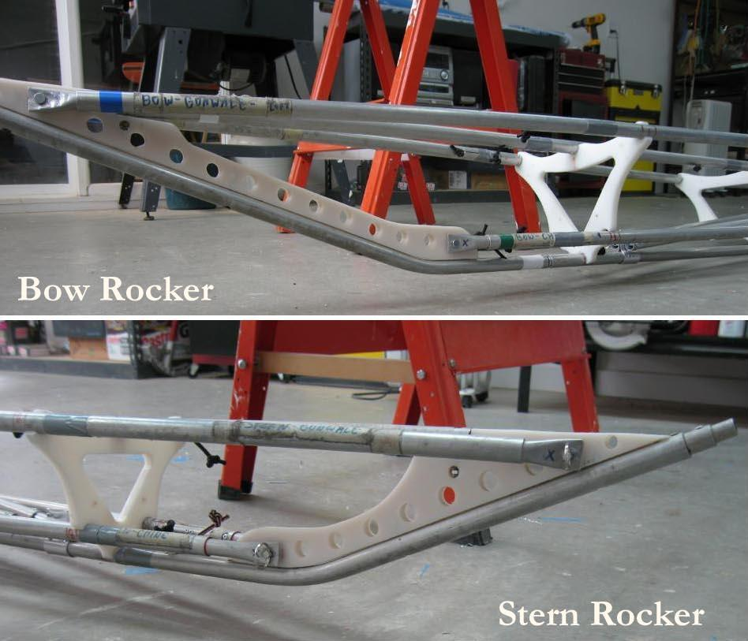

| "Arched" Inwales ( 4 of 5 ) | Menu Previous Page Next Page |
|
 The shallow aluminum Greenland style folding frames are more flexible than non folding wood frames due to the greater "play" at the HDPE snap connections of the folder. This play normally allows the frame to flatten out on the ground regardless of designed rocker or the use of older inwale or internal bracing. Rocker is re-established when the boat is skinned and on the water. In the pic above, it can be clearly seen that the arched inwales allow the frame to retain it's designed rocker while on the ground. |
|